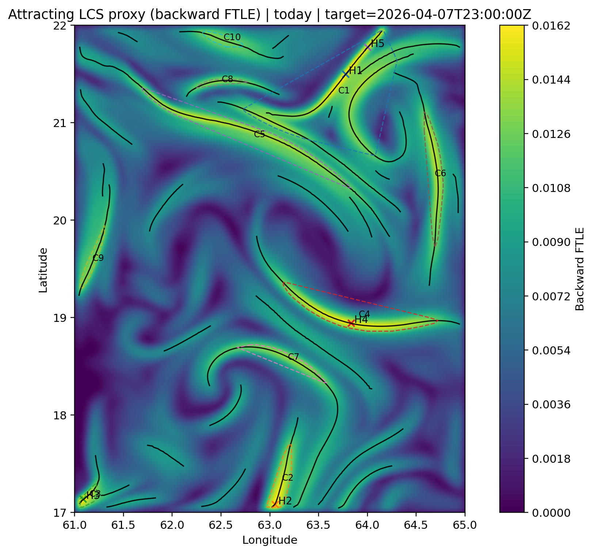
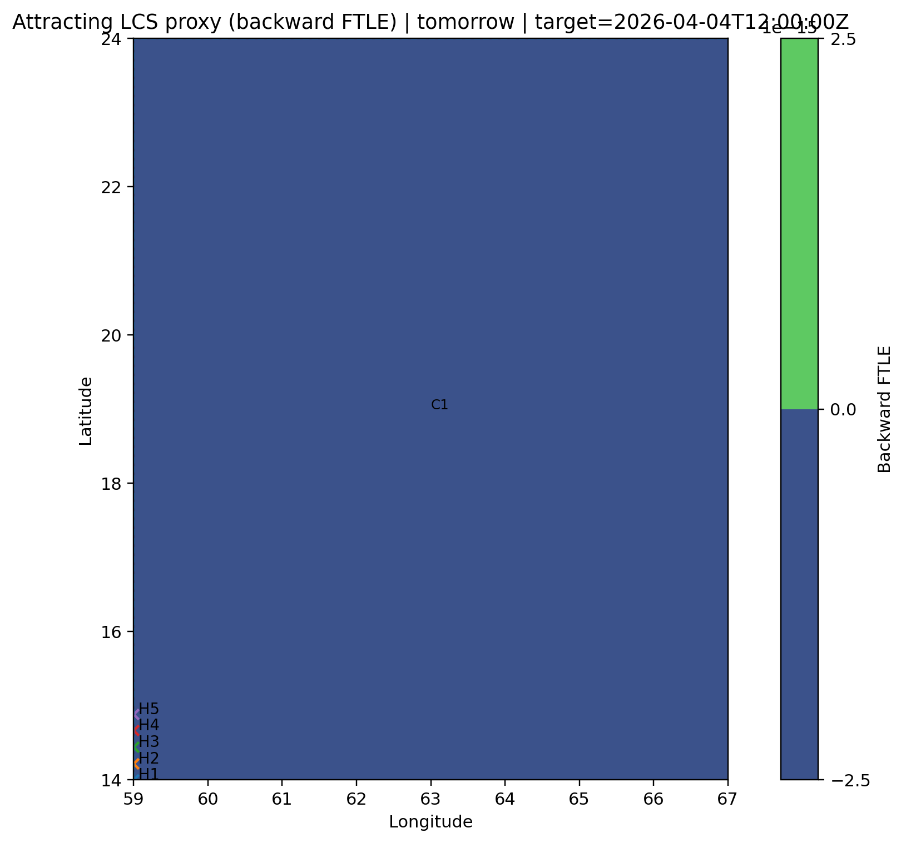

Single-page latest outputs for today, tomorrow, and latest custom run.
Target time: 2026-04-02T23:00:00Z
BBox: {"lon_min": 60.0, "lon_max": 65.0, "lat_min": 17.0, "lat_max": 23.0} | Backward days: 7.0
Estimated subset file: 5.76 MB | Estimated transfer: 450.81 MB

| Rank | Lon | Lat | FTLE |
|---|---|---|---|
| 1 | 60.083333333333336 | 17.083333333333332 | 0.016546278627663752 |
| 2 | 62.02777777777778 | 21.305555555555557 | 0.016163515199571123 |
| 3 | 61.666666666666664 | 21.5 | 0.015820672993675372 |
| 4 | 60.083333333333336 | 22.305555555555557 | 0.015058257362058129 |
| 5 | 64.0 | 19.13888888888889 | 0.014905242739308357 |
Target time: 2026-04-04T12:00:00Z
BBox: {"lon_min": 59.0, "lon_max": 67.0, "lat_min": 14.0, "lat_max": 24.0} | Backward days: 7.0
Estimated subset file: 15.15 MB | Estimated transfer: 976.76 MB

| Rank | Lon | Lat | FTLE |
|---|---|---|---|
| 1 | 59.0 | 14.0 | 0.0 |
| 2 | 59.0 | 14.222222222222223 | 0.0 |
| 3 | 59.0 | 14.444444444444445 | 0.0 |
| 4 | 59.0 | 14.666666666666668 | 0.0 |
| 5 | 59.0 | 14.88888888888889 | 0.0 |
No run published yet.
{kind=link}
{kind=link}